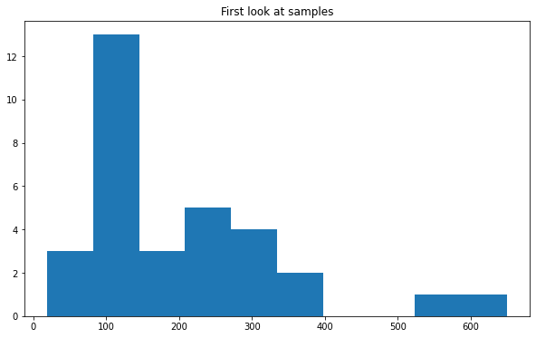
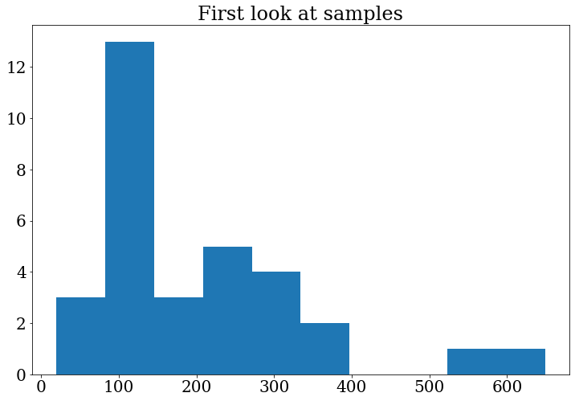
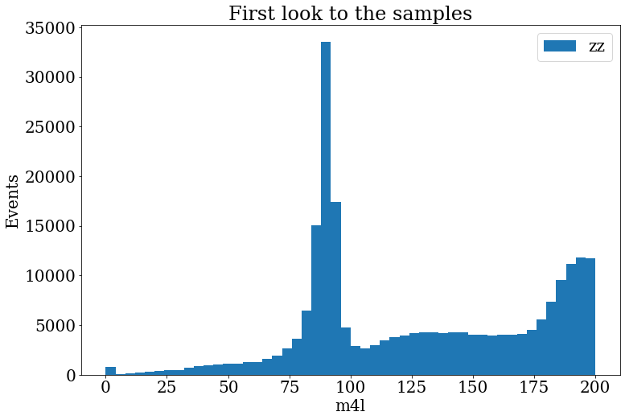
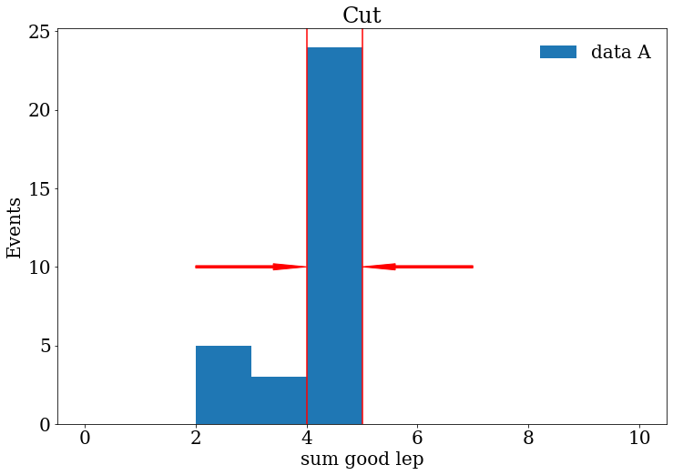
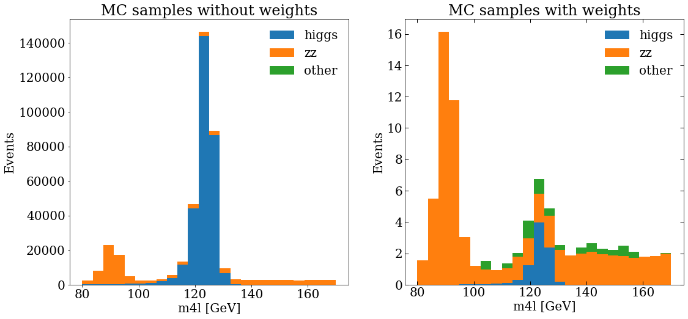
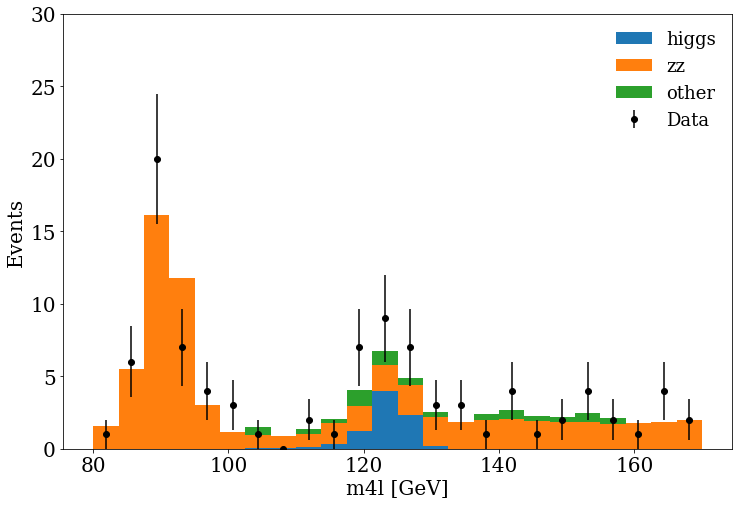
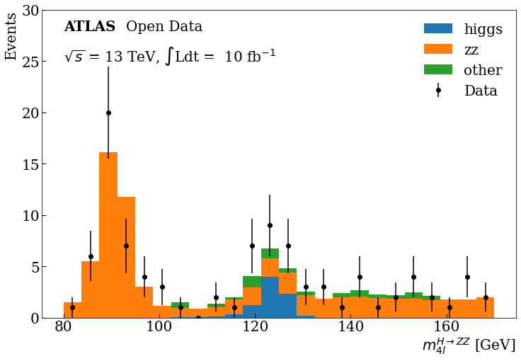

Higgs Search
Contents
Higgs Search#
In this episode, we will go through a first HEP analysis where you will be able to apply your knowledge of matplotlib and learn something new.
As we mentioned before, the goal is to reveal the decay of the Standard Model Higgs boson to two Z bosons and subsequently to four leptons
(H->ZZ->llll), this is called as a “golden channel”.
For this tutorial, we will use the ATLAS data collected during 2016 at a center-of-mass energy of 13 TeV, equivalent to 10fb⁻¹ of integrated luminosity. Here, we will use the available 4 leptons final state samples for simulated samples (Monte Carlo “MC”) and data, that after a selection, we will reveal a narrow invariant mass peak at 125 GeV, the Higgs.
First we need to import numpy and the matplotlib.pyplot module under the name plt, as usual:
import matplotlib as mpl
import matplotlib.pyplot as plt
import numpy as np
%matplotlib inline
Auto-show in jupyter notebooks
The jupyter backends (activated via %matplotlib inline, %matplotlib notebook, or %matplotlib widget), call show() at the end of every cell by default. Thus, you usually don’t have to call it explicitly there.
Samples#
In the following dictionary, we have classified the samples we will work on, starting with the “data” samples, followed by the “Higgs” MC samples and at the end the “zz” and “others” MC background components.
samples_dic = {
"data": [
["data", "data_A"],
["data", "data_B"],
["data", "data_C"],
["data", "data_D"],
],
"higgs": [
["mc", "mc_345060.ggH125_ZZ4lep"],
["mc", "mc_344235.VBFH125_ZZ4lep"],
],
"zz": [
["mc", "mc_363490.llll"],
],
"other": [
["mc", "mc_361106.Zee"],
["mc", "mc_361107.Zmumu"],
],
}
We will use uproot to read the content of our samples that are in ROOT format.
import uproot
Uproot tutorial
If you want to learn more of the Uproot python Module you can take a look to the tutorial also given by the HEP software foundation in the following link.
For each sample of the above samples_dic, we will return another dictionary that will contain all the “branches” or “variables””.
processes = samples_dic.keys()
Tuples = {}
samples = []
for p in processes:
for d in samples_dic[p]:
# Load the dataframes
sample = d[1] # Sample name
samples.append(sample)
DataUproot = uproot.open(
f"./data-ep04-higgs-search/OpenData_Atlas_{sample}.root"
)
Tuples[sample] = DataUproot["myTree"]
Let’s take a look to the “branches” stored in out data samples, taking “data_A” as example
list(Tuples["data_A"].keys())
['lep_n',
'goodlep_pt_2',
'trigM',
'm4l',
'weight',
'lep_charge',
'sum_good_lep',
'trigE',
'goodlep_pt_0',
'goodlep_pt_1',
'goodlep_sumtypes',
'lep_type',
'channelNumber',
'lep_pt',
'good_lep',
'XSection',
'lep_E',
'sum_lep_charge']
Let’s access one of these “branches” and make a simple plot:
branches = {}
for s in samples:
branches[s] = Tuples[s].arrays()
Using the pyplot hist function we can visualize the distribution the mass of the 4 leptons “m4l” for example for the “data_A” sample.
fig, ax = plt.subplots()
ax.set_title("First look at samples")
ax.hist(branches["data_A"]["m4l"])
(array([ 3., 13., 3., 5., 4., 2., 0., 0., 1., 1.]),
array([ 19.312525, 82.30848 , 145.30444 , 208.3004 , 271.29636 ,
334.2923 , 397.28827 , 460.2842 , 523.28015 , 586.2761 ,
649.2721 ], dtype=float32),
<BarContainer object of 10 artists>)

Tip
In the previous plot the numbers in the axis are very small, we can change the font size (and font family) for all the following plots, including in our code:
# Update the matplotlib configuration parameters:
mpl.rcParams.update({"font.size": 16, "font.family": "serif"})
Note that this changes the global setting, but it can still be overwritten later.
Let’s do the plot again to see the changes:
fig, ax = plt.subplots()
ax.set_title("First look at samples")
ax.hist(branches["data_A"]["m4l"])
(array([ 3., 13., 3., 5., 4., 2., 0., 0., 1., 1.]),
array([ 19.312525, 82.30848 , 145.30444 , 208.3004 , 271.29636 ,
334.2923 , 397.28827 , 460.2842 , 523.28015 , 586.2761 ,
649.2721 ], dtype=float32),
<BarContainer object of 10 artists>)

Make the histogram of the variable m4l for sample mc_363490.llll.
In the range [0,200].
With bins=50.
Include a legend “llll”.
Include the axis labels “Events” and “m4l”, in the axis y and x, respectively.
:class: dropdown
Solution
fig, ax = plt.subplots()
fig.set_size_inches((12, 8))
ax.set_title("First look to the samples")
ax.hist(branches["mc_363490.llll"]["m4l"], label="zz", range=[0, 200], bins=50)
ax.set_xlabel("m4l")
ax.set_ylabel("Events")
ax.legend()

Selection criteria#
It is very important to include some selection criteria in our samples MC and data that we are analyzing. These selections are commonly know as “cuts”. With these cuts we are able to select only events of our interest, this is, we will have a subset of our original samples and the distribution are going to change after this cuts. This will help out to do some physics analysis and start to search for the physics process in which we are interested. In this case is the 4 lepton final state.
To do this, we will select all events, from all the samples, that satisfy the following criteria:
the leptons need to activate either the muon or electron trigger,
number of leptons in the final state should be 4,
the total net charge should be zero,
the sum of the types (11:e, 13:mu) can be 44 (eeee), 52 (mumumumu) or 48 (eemumu),
good leptons with high transverse momentum
Let’s visualize some of these requirements. For now, let us continue working with the “data_A” sample. We can see how many good leptons we have in the event, by printing:
branches["data_A"]["good_lep"]
<Array [[1, 1, 1, 1], [1, ... 1], [1, 0, 1, 1]] type='32 * var * int32'>
From the previous output, we can notice that not all events have 4 good leptons. Therefore, we can use the sum of the number of good leptons per event. This variable is stored as “sum_good_lep”.
branches["data_A"]["sum_good_lep"]
<Array [4, 4, 3, 4, 4, 4, ... 4, 4, 2, 2, 4, 3] type='32 * int32'>
We will keep the events with “sum_good_lep”==4 (this is the topology we are looking for).
branches["data_A"]["sum_good_lep"] == 4
<Array [True, True, False, ... True, False] type='32 * bool'>
We can save this array in a variable to use later in a more complicated combination of requirements using the &, | and ~ logical operators.
sum_leptons_test = branches["data_A"]["sum_good_lep"] == 4
We certainly can visualize this information with Matplotlib making a histogram :).
Make a histogram of the variable “sum_good_lep” for the sample “data_A” or another sample. Try to represent in your histogram what
are the events that we wanted to keep using lines, arrows or text in your plot. :class: dropdown
Solution
fig, ax = plt.subplots()
fig.set_size_inches((12, 8))
ax.set_title("Cut")
ax.hist(branches["data_A"]["sum_good_lep"], range=[0, 10], bins=10, label="data A")
ax.arrow(2, 10, 2, 0,width=0.15, head_width=0.4, length_includes_head=True, color="red")
ax.arrow(7, 10, -2, 0,width=0.15, head_width=0.4, length_includes_head=True, color="red")
ax.axvline(x=4, color="red")
ax.axvline(x=5, color="red")
ax.set_xlabel("sum good lep")
ax.set_ylabel("Events")
ax.legend(frameon=False)

Finally, let’s save in a dictionary for all the samples the requirements mentioned above as follows:
selection_events = {}
for s in samples:
trigger = (branches[s]["trigM"] == True) | (branches[s]["trigE"] == True)
sum_leptons = branches[s]["sum_good_lep"] == 4
sum_charge = branches[s]["sum_lep_charge"] == 0
sum_types_ee = branches[s]["goodlep_sumtypes"] == 44
sum_types_mm = branches[s]["goodlep_sumtypes"] == 52
sum_types_em = branches[s]["goodlep_sumtypes"] == 48
sum_types_goodlep = sum_types_ee | sum_types_mm | sum_types_em
sum_lep_selection = sum_leptons & sum_charge & sum_types_goodlep
# Select good leptons with high transverse momentum
pt_0_selection = branches[s]["goodlep_pt_0"] > 25000
pt_1_selection = branches[s]["goodlep_pt_1"] > 15000
pt_2_selection = branches[s]["goodlep_pt_2"] > 10000
high_pt_selection = pt_0_selection & pt_1_selection & pt_2_selection
final_selection = (
trigger & sum_types_goodlep & sum_lep_selection & high_pt_selection
)
selection_events[s] = final_selection
Moreover, we can compare, by printing, the number of initial and final events after the previous selection .
for s in samples:
print(f"{s} Initial events: {len(branches[s]['m4l']):,}")
data_A Initial events: 32
data_B Initial events: 108
data_C Initial events: 174
data_D Initial events: 277
mc_345060.ggH125_ZZ4lep Initial events: 163,316
mc_344235.VBFH125_ZZ4lep Initial events: 189,542
mc_363490.llll Initial events: 547,603
mc_361106.Zee Initial events: 244
mc_361107.Zmumu Initial events: 148
for s in samples:
print(
f"{s} After selection: {len(branches[s]['m4l'][selection_events[s]]):,}"
)
data_A After selection: 18
data_B After selection: 52
data_C After selection: 93
data_D After selection: 158
mc_345060.ggH125_ZZ4lep After selection: 141,559
mc_344235.VBFH125_ZZ4lep After selection: 161,087
mc_363490.llll After selection: 454,699
mc_361106.Zee After selection: 27
mc_361107.Zmumu After selection: 16
Notice that the background events are reduced meanwhile we try to keep most of the signal.
MC samples#
To make a plot with all the MC samples we will do a stack plot. We will merge the samples following the classification we introduced at the beginning, that is:
mc_samples = list(processes)[1:]
print(mc_samples)
['higgs', 'zz', 'other']
Remember that our variable of interest is the mass of the 4 leptons (m4l),
then, let’s append in stack_mc_list_m4l the values of this variable for the 3 merged samples corresponding to the processes above.
On the other hand, a very important aspect of the MC samples is the weights,
these weights include important information that modifies the MC samples to be more like real data,
so we will save them in stack_weights_list.
Notice that the weights should be of the same shape variable that we want to plot.
stack_mc_list_m4l = []
stack_weights_list = []
for s in mc_samples:
list_sample_s = []
list_weight_s = []
for element in samples_dic[s]:
sample_s = element[1]
mc_selection_values = branches[sample_s]["m4l"][selection_events[sample_s]]
list_sample_s += list(mc_selection_values)
mc_selection_weight = branches[sample_s]["weight"][selection_events[sample_s]]
list_weight_s += list(mc_selection_weight)
stack_mc_list_m4l.append(list_sample_s)
stack_weights_list.append(list_weight_s)
We can check the lengths, to see that everything is ok.
for k in range(0, 3):
print(f"{len(stack_mc_list_m4l[k]):,} {len(stack_weights_list[k]):,}")
302,646 302,646
454,699 454,699
43 43
And then make a plot, actually, let’s make 2 plots, with matplotlib we can add sub-plots to the figure, then, we will be able to compare the MC distribution without and with weights.
var_name = "m4l"
units = " [GeV]"
ranges = [[80, 170]]
bins = 24
fig, (ax_1, ax_2) = plt.subplots(1, 2)
fig.set_size_inches((12, 8))
ax_1.set_title("MC samples without weights")
ax_1.hist(stack_mc_list_m4l, range=ranges[0], label=mc_samples, stacked=True, bins=bins)
ax_1.set_ylabel("Events")
ax_1.set_xlabel(f"{var_name}{units}")
ax_1.legend(frameon=False)
ax_2.set_title("MC samples with weights")
ax_2.hist(
stack_mc_list_m4l,
range=ranges[0],
label=mc_samples,
stacked=True,
weights=stack_weights_list,
bins=bins,
)
ax_2.set_ylabel("Events")
ax_2.set_xlabel(f"{var_name}{units}")
ax_2.tick_params(which="both", direction="in", top=True, right=True, length=6, width=1)
ax_2.legend(frameon=False)

Data samples#
Let’s append in stack_dara_list_m4l the values of the m4l variable for all the data samples A,B,C and D.
stack_data_list_m4l = []
for element in samples_dic["data"]:
sample_d = element[1]
data_list = list(branches[sample_d]["m4l"][selection_events[sample_d]])
stack_data_list_m4l += data_list
We can print the length of the list to check again that everything is fine.
len(stack_data_list_m4l)
321
To make more easy the data vs. MC final plot, we can define the following helper function that makes a histogram of the data and calculates the poisson uncertainty in each bin.
When we want to make a plot that includes uncertainties we need to use the ax.errorbar function.
def plot_data(data_var, range_ab, bins_samples):
data_hist, bins = np.histogram(data_var, range=range_ab, bins=bins_samples)
print(f"{data_hist} {bins}")
data_hist_errors = np.sqrt(data_hist)
bin_center = (bins[1:] + bins[:-1]) / 2
fig, ax = plt.subplots()
ax.errorbar(
x=bin_center, y=data_hist, yerr=data_hist_errors, fmt="ko", label="Data"
)
return fig
Data vs. MC plot#
Finally, we can include the MC and data in the same figure, and see if they are in agreement :).
fig, ax = plt.subplots()
fig.set_size_inches((10, 8))
plot_data(stack_data_list_m4l, ranges[0], bins)
ax.hist(
stack_mc_list_m4l,
range=ranges[0],
label=mc_samples,
stacked=True,
weights=stack_weights_list,
bins=bins,
)
ax.set_ylabel("Events")
ax.set_xlabel(f"{var_name}{units}")
ax.set_ylim(0, 30)
ax.legend(fontsize=18, frameon=False)

Modify a bit the previous code to include the ticks and text, in the text and axis labels use latex to achieve the final plot.
Solution
fig, ax = plt.subplots()
fig.set_size_inches((12, 8))
plot_data(stack_data_list_m4l, ranges[0], bins)
ax.hist(
stack_mc_list_m4l,
range=ranges[0],
label=mc_samples,
stacked=True,
weights=stack_weights_list,
bins=bins,
)
ax.set_ylabel("Events", loc="top")
ax.set_xlabel(r"$m^{H \rightarrow ZZ}_{4l}$" + units, loc="right")
ax.tick_params(which="both", direction="in", length=6, width=1)
ax.text(80, 28, "ATLAS", weight="bold")
ax.text(93, 28, "Open Data")
ax.text(80, 25, r"$\sqrt{s}$" + " = 13 TeV," + " $\int$Ldt = " + " 10 fb" + r"$^{-1}$")
ax.set_ylim(0, 30)
ax.legend(frameon=False)
Final Plot#
You can see at 125 GeV the component corresponding at the Higgs boson. 
Bonus
If you are more curious about other HEP analysis tools, you can take a look at this same example developed with the ROOT framework here.